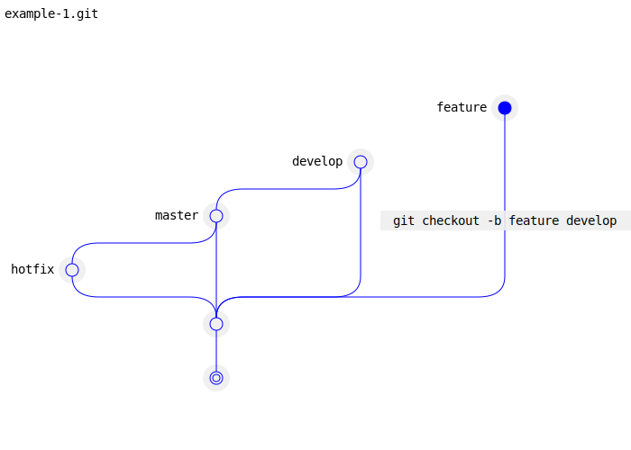
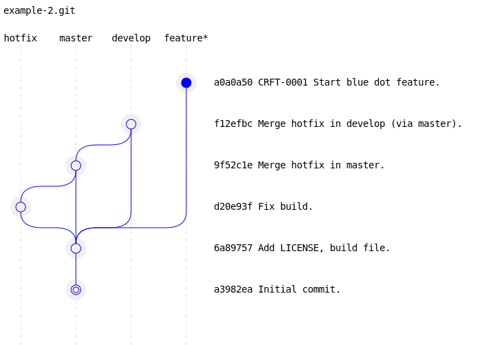

Gitcraft
Gitcraft is a small program that generates SVG files representing Git repositories as graphs. It is available on GitHub.
The first graph below shows an empty repository. It has already a default branch, master, but no commit yet.
The second graph shows the same repository with its very first commit. HEAD is pointing to that commit, which is rendered filled in blue.
The third graph shows an additional commit. The previous commit is not filled and is linked to the current commit.
The example graph below shows an example of Git flow, where a hotfix branch is already merged. Some Git flow variant would merge the hotfix in develop directly. Here it is merged indirectly, by merging master in develop. There is also a feature branch, started at the same time as the hotfox, and not yet merged.

The example graph below is the same with an alternative representation: commit messages are visible, and branch names are display at the top of the picture.
